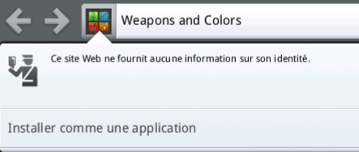
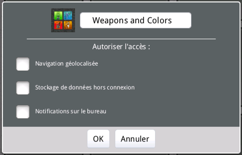
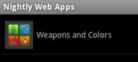
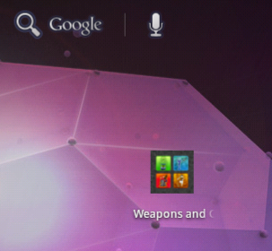
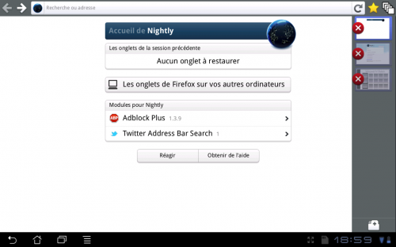

7 août 2011
Quoi de neuf dans Firefox Mobile ?
Firefox Mobile est en pleine évolution. Divers changements sympathiques arrivent :
- Une gestion des applications web :

Installation d'un site comme application via la "favicon"
Il est ensuite possible de définir les autorisations de l'application- La possibilité de mettre des applications web en raccourcis sur le bureau d'Android :

L'ajout du raccourci se fait comme pour le navigateur de base, une liste permet de choisir le site
Un raccourci, sur le bureau d'Honeycomb- Un meilleur rendu des images pour les tablettes dont la puce ARM ne prend pas en charge "neon" comme les puces Tegra2 (prévu pour Firefox Mobile 7 et disponible dans Firefox Aurora)
- Une meilleure expérience sous Android Honeycomb avec une interface dédiée aux tablettes (prévu pour Firefox Mobile 8 ) :


- La prise en charge des touch events, permettant des applications web encore plus riche en détectant où le doigt est posé, ses trajectoires etc.
Commentaires 0
Aucun commentaire.